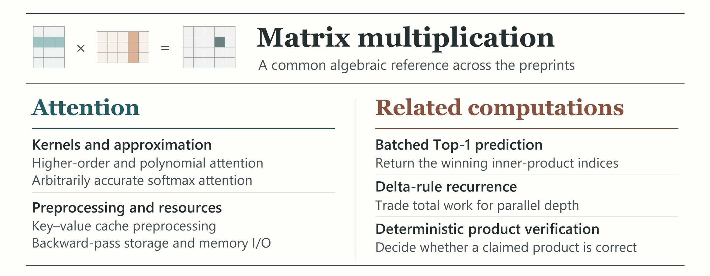

Matrix Multiplication and the Complexity of Attention
* Equal contribution (co-first authors).
A standard attention algorithm forms the query–key score matrix and uses it to compute a weighted sum for each query. Our starting question is whether computing those sums can be asymptotically cheaper than forming the scores.

Attention
-
Higher-order attention
Matrix Multiplication Lower Bounds for Strassen Attention and a Faster Algorithm for Tensor Attention -
Polynomial attention
The Arithmetic Complexity of Exact Polynomial Attention -
Cache preprocessing
Preprocessed Softmax Attention Is as Hard as Matrix Multiplication -
Arbitrary accuracy
Arbitrarily Accurate Softmax Attention Has the Rectangular Matrix Multiplication Exponent
Related computations
-
Parallel recurrence
Work–Depth Trade-offs for Exact Delta-Rule Computation
Research background
The anonymous manuscript Exact Softmax Attention Has the Rectangular Matrix-Multiplication Exponent in Extended Arithmetic Circuits (2026) proves the lower bound even when each key has a single scalar value. Its exp–log span theorem is used in the analysis of attention I/O in this collection.
Some bounds use results from the OpenAI square-exponent preprint and the accompanying square and rectangular exponent results.